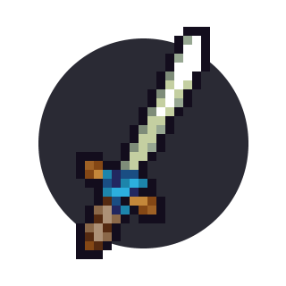

Chapter 3 Knight III: Becoming very good

3.1 Crouching
This is another very important (and largely forgotten) feature (well, bug that became a feature) in KAG. Basically, when you crouch (hold S) and not move in any direction, enemies do not collide with you. This allows you to do lots of new situational moves. Crouching also increases the radius of your shield.
3.1.1 Countering shieldbashes
Aside from overhead attacks to counter enemies shield sliding into you, you can decide to crouch instead. The sliding enemy just goes through you and you can surprise him with an attack right after.
[gif 1]
You can actually crouch while doing any actions, as long as you don’t move. Also, you can’t see the enemies doing it - there isn’t a seperate animation for crouches
[gif 2 - slashcrouch]
[gif 3 - shieldcrouch]
3.1.2 Countering stomps
Crouches are a very good counter against stomps as well. If you see someone jumping at you from a distance, you should almost always crouch.
[gif 4 - jumping on a crouching person]
Keep in mind, however, that you can counter a crouching enemy by slashing him right before landing on him.
[gif 5]
3.1.3 Attacking while being ‘inside’ someone that’s shielding
If the enemy crouches and you get inside him, you can also make use of that and attack him (with a jab or a slash). However, if he’s shielding, it requires you to slash or jab in a specific direction.
You must attack in the direction he’s shielding, or instead the shield will protect him from the attack.
[gif 6 - wrong directions]
[gif 7 - proper directions]
If you’re fighting against a player who knows this technique, you can counter him from damaging you by rapidly changing your direction of shielding.
[gif 8]
A common situation is you and your enemy both have your shields up and are running into each other (especially in narrow spaces). A good trick is to slightly move back and crouch, so that the enemy phases through you. As they get inside you, attack them.
[gif 9]
3.2 Some more moves and tricks
If you’re decent at doing the moves from the earlier chapter and they feel natural to you, you can learn these:
3.2.1 Countering double slashes
If you’re in a situation when the enemy is constantly spamming slashes and you must shield yourself, he may eventually decide to charge a doubleslash. This can be countered: if you notice that he’s charging his slash for longer than usual, you can jab him and interrupt his slash.
[gif 10]
However… this can also be countered - the person charging a double slash can just release his button, counterjabbing the enemy.
[gif 11]
He can also just try to not be close enough for you to jab - in some situations if you’re fast enough and realise he’s going to double slash you can quickly run away with a quick shield slide (or a slash escape), but if he’s fast he can just slash you before you do that.
[gif 11.2]
[gif 11.3]
Also, if you know that the enemy knows how to do that, you can also prevent him from doing it. You can try charging a slash for a little longer than a perfect 15 tick (half a second) slash, but not as long as a double slash - if you’re lucky, the enemy will attempt a jab but you will slash him first and be able to damage him easily.
[gif 12]
3.2.2 Counter jab
A counter jab punishes the enemy for missing their attack. As the enemy ends their slash, turn around and quickly jab them. They won’t have time to shield.
[gif 13]
It’s a good way to play against players who just slashspam - bait them to jump at you with their slash, dodge it and then quickly jab right after.
[gif 14]
3.2.3 Overhead jab
A rather simple, mentioned already as a counter against when your enemy shieldslides, but you can do it when the enemy is just walking forward with his shield up as well:
[gif 14.5]
Jump over the enemy’s head quickly and jab them before they can react and move their shield. Don’t just click but instead hold your mouse button for a short while until you are at the perfect point to release the jab.
3.2.4 Tempo jab
Often you will get into the situation where you are shielding and an enemy knight is repeatedly slashing you. Thus the other knight has the tempo advantage. If you try and slash them, then you will die as you will have begun charging your slash after them – so they will always be able to release earlier.
One way to escape this situation is with a quick jab – which will interrupt the enemy’s slash.
[gif 14.6]
Beware though – if you have only 1 heart, a good enemy will instantly jab you back for the kill. Also, there’s a chance that the enemy will shield after slashing - worry not, you will learn what to do if this happens in the next chapter.
3.2.5 Slash stomping (easy version)
When you have height advantage over the enemy (at least 3 blocks), you can just jump down at him with a slash. The slash will pierce his shield and the momentum from slashing will let you stomp him for 1 heart of damage.
[gif 14.7]
3.2.6 Cancelling and baiting with a double slash
This is somewhat related to the above and is a very fun trick to do. Basically, the idea is to charge a double slash, but only slash once, then shield. This way, you will get closer to the enemy, which will think you want to double slash him and try to counterjab, but will jab your shield instead.
[gif 15]
3.2.7 Aggressive double slash
This is a risky but potentially rewarding move. The aim is to take advantage of the large distance that a knight can travel whilst double slashing, hitting nothing with the first slash but hitting the enemy with the 2nd.
For maximum effectiveness, do a small jump between the slashes so your movement forms a kind of ‘m’ shape – this will allow you to move as far as possible.
[gif 16]
3.2.8 Chained shieldbashing
It is possible to keep someone in a near permanent stunlock by repeatedly shield bashing them. This move is especially useful to counter someone who is holding a bomb, as they won’t be able to throw it while stunned.
[gif 17]
3.3 Using bombs (especially in 1v1s)
Being able to use bombs efficiently is an important part of 1v1s (in most duels and 1v1 tournaments, knights start with a single bomb). You can use them in several ways:
3.3.1 Using them to bomb jump
If the enemy has a defensive playstyle, you may bomb jump and then slash stomp them.
[gif 18]
However, in some cases it’s possible for the enemy to counter it if he’s good enough, by slashing above at a correct angle with proper timing:
[gif 19]
3.3.2 Using them after stunning someone
Light a bomb and time its explosion with stunning an enemy, either by shield stunning him or slashing him (keep in mind that in the 2nd variation you also get damage because of not being able to shield the bomb – so you should do this preferably when you have more than 3 hearts and the enemy has less)
[gif 20]
[gif 21]
3.3.3 Combat bomb
Throw your bomb right so it explodes as it hits an enemy. Usually the best way to catch an enemy off guard is to aim it just behind their character or at their head.
[gif 22]
3.3.4 Bomb and jab/slash combo
The idea is to light a bomb and throw it behind the enemy (don’t do it too early – you don’t want them to throw it back), dealing 3 hearts of damage and stunning him for a short while, allowing you to do another jab and kill the enemy.
[gif 23]
If the enemy is far away, you can also do it with a slash (to have bigger range)
[gif 23.2]
3.3.5 Water buoyancy for bombs
Bombs in water will rise very quickly upwards. This can be used to surprise an enemy.
[gif 25]
3.3.6 Catching and throwing back enemy bombs
You can catch enemy bombs and throw them back! The best way to do this is to catch with C and throw with Space. This is because the Space key cannot catch, only throw – so it prevents you catching the bomb, throwing it, and catching it again – which might happen if you just spam C. Be careful doing this – if the enemy throws their bomb very late, you will just blow yourself up.
[gif 26]
Water bombs can also be caught, but you have to be careful, since water bombs will explode on impact. You must dodge the bomb, or catch it before it touches anything else. It’s best to do this when the bomb gets thrown above your head, as in the example below.
[gif 27]
3.4 Combos after landing a successful slash
If you’re good and fast enough, just by landing one successful slash (or just doing a doubleslash) you can finish the enemy in most of situations.
3.4.1 Slash + jab + shieldbash + jab
- Successful slash / double slash
- Jab
- Move away and then shield slide the enemy to break their shield
- Jab again
[gif 28]
[gif 29]
3.4.2 Slash + jab + double slash
- Successful slash / double slash
- Jab
- Charge a double slash. You don’t need to worry about the possibility of him jabbing you while you’re doing it (unless he ate some food and unless you have 1 heart only - in this case, having some distance as mentioned in Countering double slashes is important) - if he tries jabbing you, you can just counterjab him instantly, as mentioned in the Countering double slashes section
[gif 30]
3.4.3 Slash + jab + overhead jab
A successful slash / double slash + jab combined with an overhead jab. The enemy will still be ‘in shock’ from the slash + jab and usually won’t be fast enough to shield the final jab.
[gif 31]
[gif 32]
3.5 Noanims
At this point, you may probably want to visit the noanims section. They’re a rather weird part of the game, but a part of it nonetheless and you should learn more about them. Visit the playing CTF section if you didn’t do so yet as well.